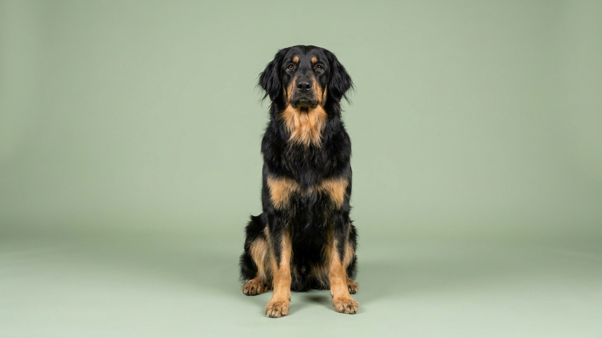

Ховаварт выглядит как золотистый ретривер, но ведёт себя совсем иначе: он охраняет, анализирует незнакомцев и принимает самостоятельные решения. Это немецкая рабочая порода с многовековой историей охраны усадьб. Семье он предан без оговорок, но без чёткого воспитания и физической нагрузки превращается в упрямого самостоятельного командира.
🐾 Ваш питомец — ховаварт?
Заведите профиль в AnimaLife: приложение запомнит породу, возраст и вес и будет подсказывать по уходу именно для неё. Вопросы AI-ветеринару — круглосуточно и бесплатно.
Завести профиль → Завести в MAX →
У вас iPhone? AnimaLife есть в App Store
Ховаварт не просто исполняет команды: он оценивает ситуацию сам. Порода отбиралась для охраны поместий в одиночку, без постоянного контроля хозяина. Этот рабочий интеллект никуда не делся. Пёс будет слушаться, если понимает смысл требования, и игнорировать, если команда кажется ему бессмысленной.
С членами семьи ховаварт ровный, ласковый, надёжный компаньон. С детьми ведёт себя корректно при правильном воспитании. К незнакомцам относится выжидательно: не агрессивен, но и дружелюбия до знакомства нет.
Ховаварт охраняет территорию и семью осознанно. Он облаивает реальную угрозу, а не каждый шорох. Недоверие к посторонним это норма для породы, не патология.
Социализация с 8 до 16 недель критична. Щенка знакомят с людьми, транспортом, детьми: планомерно, без стресса.
Ховаварт хорошо поддаётся дрессировке при одном условии: тренировки интересны и логичны. Жёсткие методы не работают, порода замыкается. Лучший формат: короткие сессии по 10–15 минут, позитивное подкрепление, чёткие границы без криков.
Ховаварт активная порода. 1,5–2 часа движения в день: это минимум, не подвиг. Прогулки для галочки порождают деструктивное поведение: грызёт мебель, копает, лает без повода.
Оптимальный формат жизни: дом с участком. В квартире живёт при условии длинных ежедневных прогулок и умственной нагрузки (нюхательные игры, апортировка, команды). Шерсть средней длины требует расчёски 2–3 раза в неделю, в период линьки чаще. Ховаварт хорошо переносит холод, жару переносит хуже.
Материал носит информационный характер и не заменяет очную консультацию ветеринара.
🐾 У вас ховаварт?
AnimaLife соберёт уход под породу: к каким болезням есть склонность, что проверять по возрасту, чем кормить и когда пора к врачу. Бесплатно, прямо в мессенджере.
Собрать план ухода → Собрать в MAX →
У вас iPhone? AnimaLife есть в App Store
🐾 Понравился разбор?
Подпишитесь на канал — каждый день разбираем по одному тревожному симптому у кошек и собак: что в пределах нормы, а когда пора к врачу. Подпишитесь, чтобы не пропустить разбор, который может спасти здоровье вашего питомца.